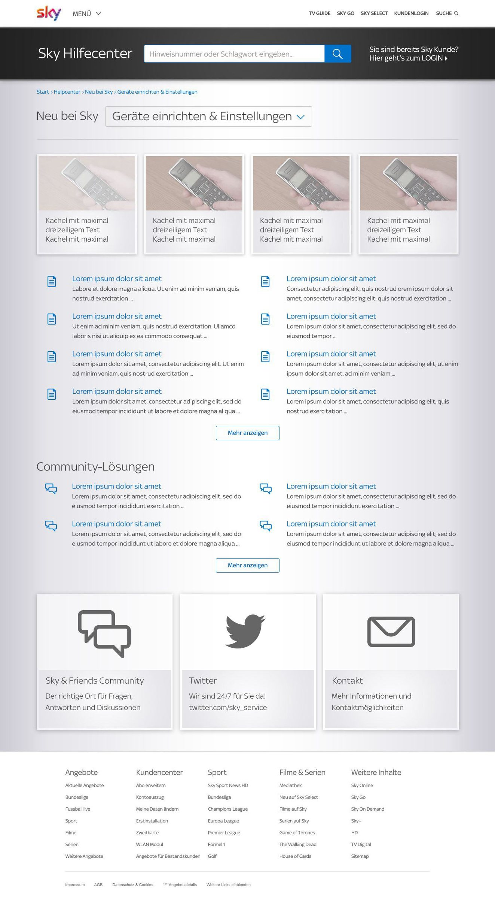
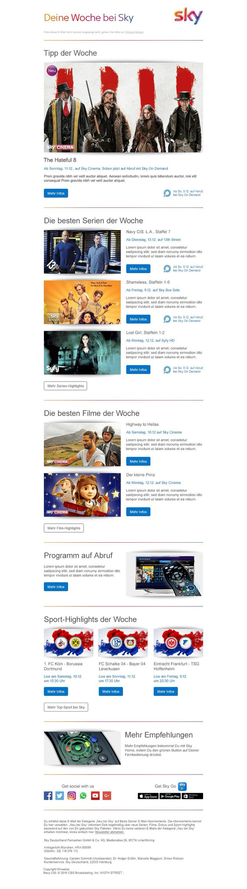

Sky Deutschland · 2014 – 2019 · Senior Manager Screen Design
Sky: one visual language for a brand with many owners
At Sky Deutschland I worked in the internal design agency that served every part of the company: marketing, editorial, HR, customer service, sales. The brand was strong on screen. Behind the screen, each department had built its own pages, its own templates and its own habits.

The problem
For the people using it
Customers looking for help met a different layout on every page and gave up on self-service. Employees searched an intranet that had grown by accretion: every department with its own corner, none of them findable. Subscribers received newsletters that looked like they came from different companies.
For the business
A pay-TV brand sells trust and polish. Every screen that did not look like Sky cost a little of both, and every new page built from scratch cost design and development time that the internal agency did not have. The work had many owners and no shared standard, and in a company that size every change is political.
Project detail
How I worked
Start where users are most frustrated
The help centre was the place where a customer with a problem met the brand. I redesigned it around what people came for: the top questions first, one search field, and a fixed set of content modules that editorial could combine without asking a designer.

Refresh the intranet as a product, not as a page
The intranet served every employee and belonged to no one. I treated it as a product: one navigation, one card pattern for people, documents and posts, and search as the primary way in. Department pages moved into the same pattern instead of keeping their own layouts.
Turn the newsletters into a system
Newsletters went out to millions of subscribers and were built by hand each time. I designed a modular template, a small set of content blocks with rules for images, headlines and calls to action, so the editorial team could produce a consistent issue without a designer in the loop.

Make the standard the easy path
In a company with that many owners, a standard only survives if it is faster than the alternative. I wrote the rules down, built the templates so that the right choice was the default, and spent as much time in conversations with department heads as in Sketch. The politics were part of the work.
What it changed
What I took from it
Visual consistency at scale is not a style question. It is a question of who owns what, and of making the shared way the cheapest way. I learned to design the template and the conversation that makes people adopt it.